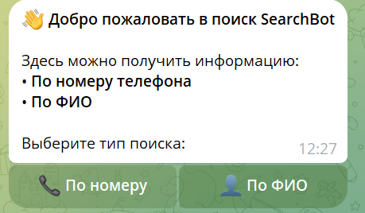

Анализ данных по номеру и ФИО
Ваш быстрый и точный OSINT-инструмент в Telegram. Найдите нужную информацию за считанные секунды.
Открыть бота
О нашем проекте
SearchhbotInfo2 — это специализированный Telegram-бот, созданный для облегчения работы с открытыми данными. В отличие от других инструментов, наш бот фокусируется на ключевых для OSINT запросах: по номеру телефона и полному имени (ФИО). Он предоставляет быстрые и актуальные данные, помогая вам в расследованиях, проверках и поиске информации.
Перейти в наш Telegram-каналКлючевые функции
📱 Поиск по номеру телефона
Введите любой номер, и бот предоставит доступную информацию, связанную с ним. Это может включать имя, мессенджеры, социальные сети и другую публичную информацию.
👤 Поиск по ФИО
Используйте полное имя для поиска профилей в социальных сетях, новостных упоминаний и другой информации из открытых источников.
Оставайтесь на связи
Все свежие обновления, новости и полезные советы публикуются в нашем канале. Присоединяйтесь, чтобы не пропустить ничего важного!
Наш Telegram-канал